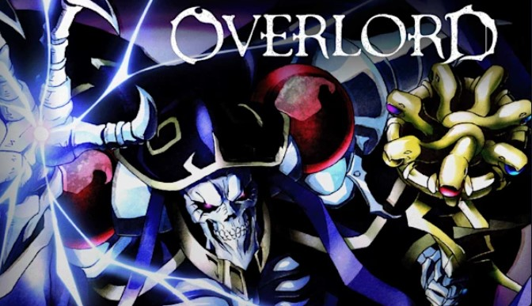

Season 1
 A primeira temporada se inicia com o protagonista na sala da guilda do jogo que era apaixonado. Sendo o último dia que Yggdrasil iria funcionar, resolver ficar conectado até o último segundo, para aproveitar a Tumba de Nazarik que ele e seus amigos haviam montado juntos. Porém, quando chega a meia noite, ele não consegue mais sair desse jogo. Ao que tudo indica, está preso nessa realidade e os NPCS ganham sentimentos e conciência! Confuso com tudo o que está acontecendo, resolve sair ao ar livre e pensar um pouco. Ao fazer essa sua saída, descobre que não está mais em Yggdrasil, mas sim em um mundo novo. A partir dessa revelação, toma a decisão de dominar esse mundo. Assume então o nome de sua guilda: Ainz Ooal Gown. Faz isso para expandir o nome e poder tornar Nazarik uma futura nação poderosa nesse novo mundo. Somos então apresentados aos seus súditos, os Guardiões dos Andares.
Season 2
A segunda temporada começa exatamente onde a primeira termina, porém agora com novos desafios. Ainz toma conhecimento de um povoado de Homens-Lagarto, próximo de Nazarik. Visando expandir seu império, decide fazer com que eles se tornem seus subordinados. Para isso, transfere a tarefa a Cocytus, um dos Guardiões. A guerra contra os homens lagartos é muito interessante, pois temos a oportunidade de conhecer mais sobre esse povo e seus costumes, e a resolução desse embate é muito genial! De outro ponto, temos Sebas, um dos mordomos de Ainz, que é enviado pelo mundo para colher informações e acaba se envolvendo em uma trama de tráfico e abuso de pessoas. Através de Sebas, somos introduzidos pela primeira vez ao Reino de Re-Estize, um dos reinos dos humanos presentes naquele mundo
Season 3
Definitivamente o ápice da série chegou na terceira temporada. Após o final da segunda temporada, podemos finalmente começar a vislumbrar um pouco do poder titânico que o Ser Supremo possui. Todas as tramas e maquinações de Ainz começam a se encaixar, e caminhamos para Nazarik se tornar uma nação. Essa temporada é frenética, tendo nos últimos cinco episódios duas batalhas épicas! Em uma delas é nos apresentado uma das maiores chacinas dos animes. Ainz começa a assustar, pois aparentemente seu poder é imbatível. Entramos ainda mais no meio político dos reinos desse mundo e começamos a compreender melhor como as engrenagens funcionam. A temporada chega no seu clímax, quando Ainz é obrigado a lutar contra um grande admirador seu. Após esse embate, o Reino Feiticeiro é finalmente consolidado.